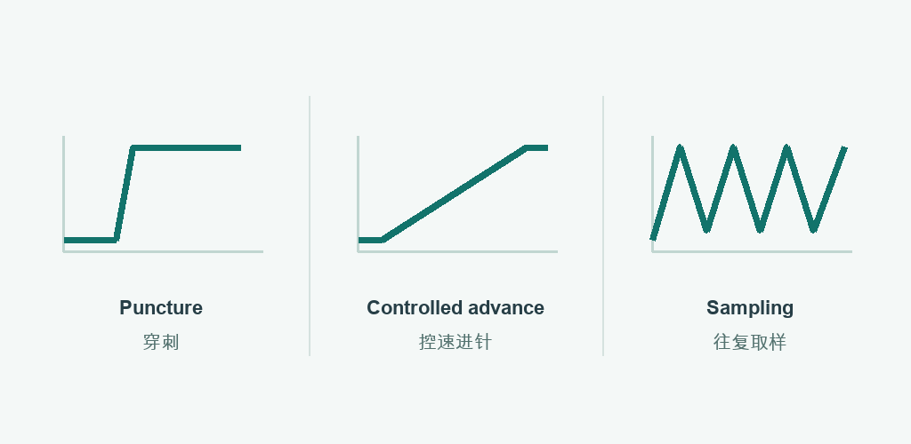
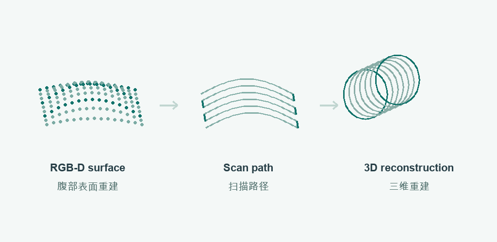

面向微创手术的机器人器械研究，涵盖微型弯曲关节、手术器械和影像引导介入系统。
将弯曲长度可调的柔性关节与紧凑腕关节结合，用于进入喉部狭窄空间并抓取组织。
利用柔性套管引导预冷气流，缩短微型手术关节的冷却时间。
用四个耦合模型分析设计参数对弯曲角、刚度、扭转角和输出力的影响。

可复用手持驱动主体与一次性活检针快拆连接，提供三种针运动模式。

这项在研工作利用 RGB-D 腹部表面成像为 UR5 机械臂规划经腹超声扫描路径。
小型变刚度腕关节使经皮穿刺机器人可在进针后改变末端方向。